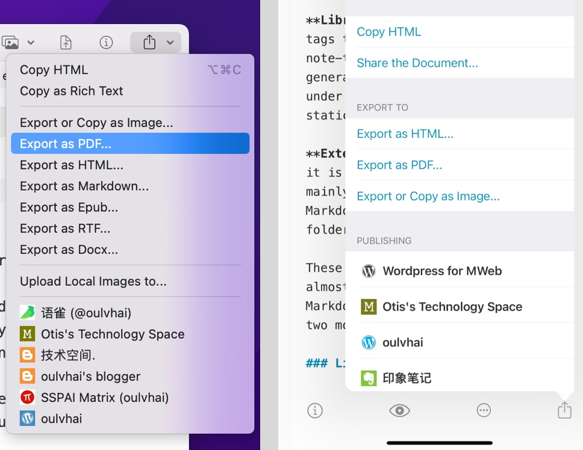
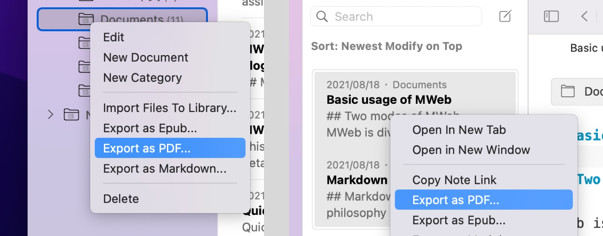

MWeb supports exporting documents as image, HTML, PDF, and the macOS version also supports exporting as Epub, RTF and Docx. The usage method is shown in the figure below.

Features specific to MWeb for macOS
Copy as Rich Text feature
You can use the menu: Publish - Copy as Rich Text to use this feature. This function is mainly used to paste the current Markdown document into Mail (mail.app), Pages.app, Word.app. In the case that the Markdown document has local images, the export to docx function does not currently support images well. At this time, you can use the copy as rich text function, and then press CMD + V in the three software mentioned above to paste, so that the picture can be pasted successfully.
If you need to copy the preview style, you can try the menu: Publish - Export or Copy as Image, then select all the content in the interface, press CMD + C to copy, and then try to paste it into other editors, For example, WeChat editor.
Export to PDF or Epub
MWeb can not only export a single Markdown document as PDF or Epub, but also export multiple documents as a PDF or Epub document in the Library mode.

About export to HTML, Docx
Using MWeb to export to HTML will export a single HTML. If there is a local image, the local image will be Base64 encoded and embedded into the HTML.
In addition, exporting to Docx does not currently support local images. If the exported Docx document contains images, the current solution is to use Pandoc to export to Docx. The way to use it is to install Pandoc first, and then add the Pandoc & Run Script service in the Preferences - Publishing of MWeb. Give it a name and save it, then in the "Publish" menu, choose to run this publishing service.